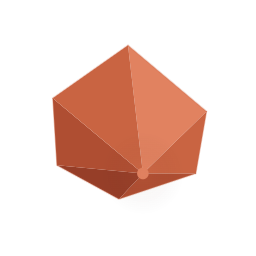
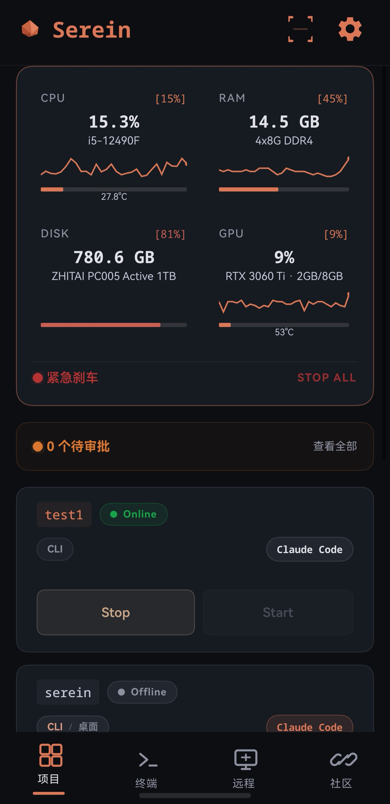
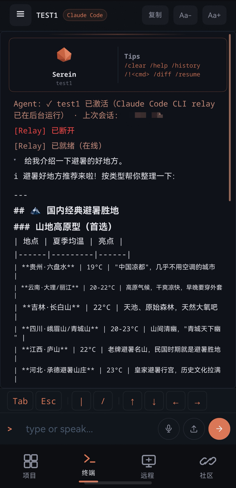
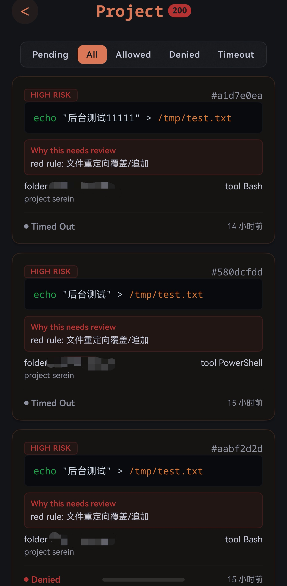
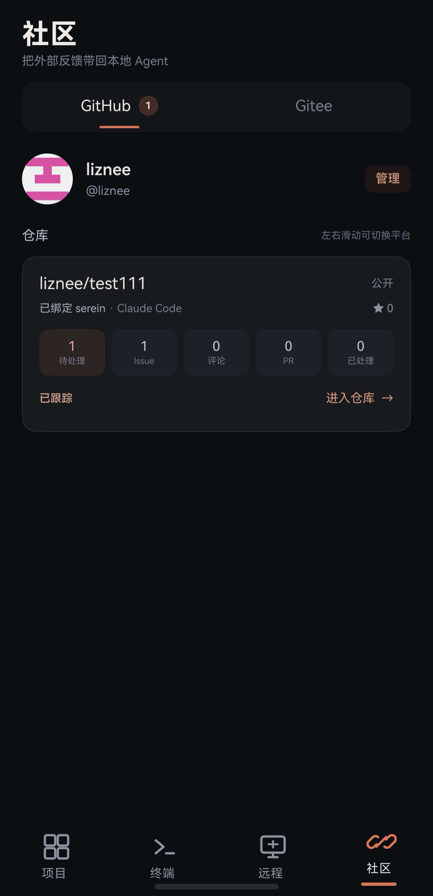
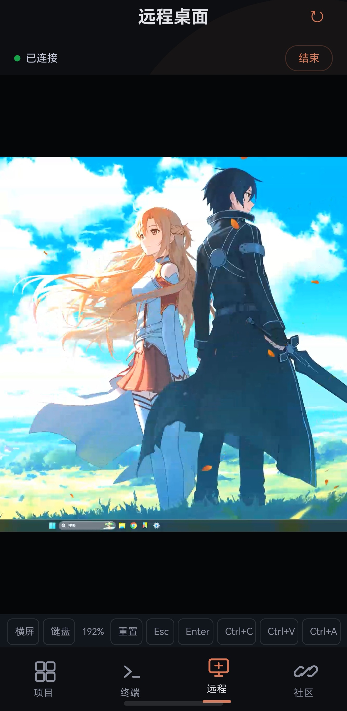

单一服务承载审批、状态机与长连接。
Go + chi + SQLite 降低部署复杂度，并在服务端集中处理超时、并发和 WebSocket 生命周期。

SereinSEREIN / PERSONAL AGENT WORKSPACE鸿蒙原生 · 本地优先 · 自托管
Serein 是面向 HarmonyOS 的本地 Agent 工作台：在手机上继续 Claude Code 与 Codex 会话，处理风险审批、项目状态和外部 Issue。代码与会话保留在自己的电脑和自托管服务中；远程桌面、社区协作与 Codex Desktop 当前标记为实验能力。
终端、审批、远程与协作，一部手机集中查看





无需持续盯守终端。关键操作到来时，Serein 会把决定交还给你。
side quest / 01Serein 将 GitHub/Gitee Issue 匹配到本地项目与既有 Agent 会话，并记录分析、审批、验证和回复结果；涉及写入、推送或高风险命令时，流程会等待用户确认。
拉取 Issue、评论与仓库信息；Serein 先用 Git Remote 对照本地项目，外部文本始终作为不可信数据处理。
同一个 Issue 第一次建立独立会话，再次进入恢复原会话；项目默认 Agent 会被记住，不再每次重新选择。
Agent 先复现、定位、验证，再决定是否修改；涉及高风险命令时，手机审批仍是最后一道边界。
需要人手处理文件、图形界面或代码细节时，可从同一台手机进入远程桌面，继续当前工作上下文。
结果摘要会保留复现情况、修改、测试与遗留风险；推送、发版、关闭 Issue 等写入动作始终需要明确确认。
根据处理结果生成可编辑的回复草稿；你确认之后，才会把内容写回 GitHub、Gitee 或后续支持的平台。
终端会话、风险审批、后台通知、设备监控、远程桌面和 Issue 协作通过同一套自托管链路连接。稳定核心与实验功能明确区分，工程参数均可在公开源码和配置中核对。
Go + chi + SQLite 降低部署复杂度，并在服务端集中处理超时、并发和 WebSocket 生命周期。
系统通知、后台任务、键盘、手势、触控与 HUKS 安全存储均由 ArkTS 原生实现。
Node.js 负责 PTY 与双向 Relay，Python Hook 负责风险分级；审批基础设施不可用时，敏感操作默认拒绝。
手机端接收增量输出并继续输入，Agent 无需重新加载项目背景。
选择下方能力，查看它在实际工作流程中的运行方式。
01 / TERMINAL
02 / APPROVAL
03 / COMMUNITY
实验功能 · 源码开放04 / REMOTE
实验功能 · 源码开放05 / MONITOR
源码、部署配置与运行边界公开可查。你可以在自己的 Windows 电脑和服务器上部署 Serein，并使用 HarmonyOS 客户端连接；Bug、功能建议与兼容性问题均可通过 GitHub Issue 反馈。